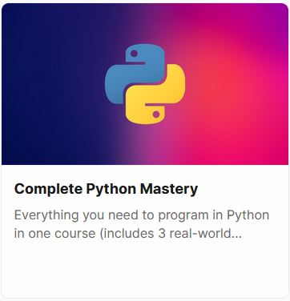

[Mosh-Python] The Complete Python Programming Course for Beginners to Advanced - Youtube
1- Getting Started (32m)
-- 1- What is Python (3:21)
-- 2- Installing Python (1:52)
-- 3- Python Interpreter (1:55)
-- 4- Code Editors (1:19)
-- 5- Your First Python Program (3:36)
-- 6- Python Extension (2:52)
-- 7- Linting Python Code (4:14)
-- 8- Formatting Python Code (3:54)
-- 9- Running Python Code (2:59)
-- 10- Python Implementations (2:28)
-- 11- How Python Code is Executed (2:46)
-- 12- Quiz (1:37)
-- 13- Follow Me Around
-- 14- Learning Paths
2- Primitive Types (34m)
-- 1- Variables (3:04)
-- 2- Variable Names (3:02)
-- 3- Strings (5:30)
-- 4- Escape Sequences (2:40)
-- 5- Formatted Strings (2:08)
-- 6- String Methods (5:54)
-- 7- Numbers (2:46)
-- 8- Working with Numbers (2:09)
-- 9- Type Conversion (5:04)
-- 10- Quiz (2:43)
3- Control Flow (37m)
-- 1- Comparison Operators (2:04)
-- 2- Conditional Statements (4:09)
-- 3- Ternary Operator (2:09)
-- 4- Logical Operators (4:02)
-- 5- Short-circuit Evaluation (2:06)
-- 6- Chaining Comparison Operators (1:22)
-- 7- Quiz (1:43)
-- 8- For Loops (3:38)
-- 9- For..Else (2:46)
-- 10- Nested Loops (2:44)
-- 11- Iterables (3:08)
-- 12- While Loops (4:59)
-- 13- Infinite Loops (1:37)
-- 14- Exercise (2:05)
4- Functions (41m)
-- 1- Defining Functions (2:24)
-- 2- Arguments (2:20)
-- 3- Types of Functions (4:02)
-- 4- Keyword Arguments (2:00)
-- 5- Default Arguments (1:35)
-- 6- xargs (4:15)
-- 7- xxargs (2:20)
-- 8- Scope (5:09)
-- 9- Debugging (6:50)
-- 10- VSCode Coding Tricks - Windows (2:21)
-- 11- VSCode Coding Tricks - Mac (1:49)
-- 12- Exercise (1:29)
-- 13- Solution (4:41)
-- A Quick Note
5- Data Structures (1h20m)
-- 1- Lists (3:54)
-- 2- Accessing Items (3:13)
-- 3- List Unpacking (3:51)
-- 4- Looping over Lists (2:54)
-- 5- Adding or Removing Items (2:56)
-- 6- Finding Items (1:28)
-- 7- Sorting Lists (4:35)
-- 8- Lambda Functions (1:49)
-- 9- Map Function (3:25)
-- 10- Filter Function (2:05)
-- 11- List Comprehensions (3:10)
-- 12- Zip Function (1:49)
-- 13- Stacks (4:24)
-- 14- Queues (2:50)
-- 15- Tuples (4:02)
-- 16- Swapping Variables (2:37)
-- 17- Arrays (3:11)
-- 18- Sets (4:03)
-- 19- Dictionaries (5:24)
-- 20- Dictionary Comprehensions (3:19)
-- 21- Generator Expressions (3:51)
-- 22- Unpacking Operator (4:05)
-- 23- Exercise (6:21)
6- Exceptions (20m)
-- 1- Exceptions (2:16)
-- 2- Handling Exceptions (4:10)
-- 3- Handling Different Exceptions (3:05)
-- 4- Cleaning Up (1:57)
-- 5- The With Statement (3:07)
-- 6- Raising Exceptions (3:21)
-- 7- Cost of Raising Exceptions (4:41)
7- Classes (1h25m)
-- 1- Classes (2:35)
-- 2- Creating Classes (3:45)
-- 3- Constructors (4:37)
-- 4- Class vs Instance Attributes (3:58)
-- 5- Class vs Instance Methods (4:05)
-- 6- Magic Methods (3:13)
-- 7- Comparing Objects (3:11)
-- 8- Performing Arithmetic Operations (1:31)
-- 9- Making Custom Containers (6:55)
-- 10- Private Members (3:40)
-- 11- Properties (7:30)
-- 12- Inheritance (4:23)
-- 13- The Object Class (2:23)
-- 14- Method Overriding (3:14)
-- 15- Multi-level Inheritance (2:42)
-- 16- Multiple Inheritance (3:22)
-- 17- A Good Example of Inheritance (4:31)
-- 18- Abstract Base Classes (4:50)
-- 19- Polymorphism (3:56)
-- 20- Duck Typing (2:50)
-- 21- Extending Built-in Types (2:26)
-- 22- Data Classes (4:36)
8- Modules (20m)
-- 1- Creating Modules (4:16)
-- 2- Compiled Python Files (2:19)
-- 3- Module Search Path (1:35)
-- 4- Packages (2:27)
-- 5- Sub-packages (1:01)
-- 6- Intra-package References (1:36)
-- 7- The dir Function (1:39)
-- 8- Executing Modules as Scripts (2:55)
9- Python Standard Library (1h)
-- 1- Python Standard Library (0:51)
-- 2- Working With Paths (4:48)
-- 3- Working with Directories (4:14)
-- 4- Working with Files (3:59)
-- 5- Working with Zip Files (3:15)
-- 6- Working with CSV Files (4:50)
-- 7- Working with JSON Files (3:57)
-- 8- Working with a SQLite Database (9:10)
-- 9- Working with Timestamps (2:24)
-- 10- Working with DateTimes (5:05)
-- 11- Working with Time Deltas (2:41)
-- 12- Generating Random Values (4:09)
-- 13- Opening the Browser (1:12)
-- 14- Sending Emails (6:48)
-- 15- Templates (4:53)
-- 16- Command-line Arguments (1:54)
-- 17- Running External Programs (8:06)
10- Python Package Index (48m)
-- 1- Pypi (1:49)
-- 2- Pip (6:23)
-- 3- Virtual Environments (4:04)
-- 4- Pipenv (3:40)
-- 5- Virtual Environments in VSCode (3:49)
-- 6- Pipfile (4:48)
-- 7- Managing Dependencies (3:28)
-- 8- Publishing Packages (8:22)
-- 9- Docstrings (5:48)
-- 10- Pydoc (4:06)
11- Popular Python Packages (1h30m)
-- 1- Introduction (1:41)
-- 2- What are APIs (2:36)
-- 3- Yelp API (2:51)
-- 4- Searching for Businesses (9:54)
-- 5- Hiding API Keys (2:05)
-- 6- Sending Text Messages (6:02)
-- 7- Web Scraping (9:06)
-- 8- Browser Automation (11:28)
-- 9- Working with PDFs (6:18)
-- 10- Working with Excel Spreadsheets (9:52)
-- 11- Command Query Separation Principle (4:39)
-- 12- NumPy (9:05)
12- Building Web Applications with Django (30m)
-- 1- Introduction (1:43)
-- 2- Your First Django Project (4:11)
-- 3- Your First App (3:41)
-- 4- Views (7:59)
-- 5- Models (4:57)
-- 6- Migrations (8:00)
-- 7- Changing the Models (5:38)
-- 8- Admin (4:29)
-- 9- Customizing the Admin (6:55)
-- 10- Database Abstraction API (3:52)
-- 11- Templates (10:23)
-- 12- Adding Bootstrap (4:19)
-- 13- Customizing the Layout (2:23)
-- 14- Sharing a Template Across Multiple Apps (3:48)
-- 15- Url Parameters (4:37)
-- 16- Getting a Single Object (3:48)
-- 17- Raising 404 Errors (3:51)
-- 18- Referencing Urls (3:47)
-- 19- Creating APIs (9:26)
-- 20- Adding the Homepage (4:27)
-- 21- Getting Ready to Deploy (9:44)
-- 22- Deployment (7:59)
13- Machine Learning with Python (30m)
-- 1- What is Machine Learning (1:58)
-- 2- Machine Learning in Action (2:47)
-- 3- Libraries and Tools (4:54)
-- 4- Importing a Data Set (6:21)
-- 5- Jupyter Shortcuts (5:26)
-- 6- A Real Machine Learning Problem (3:17)
-- 7- Preparing the Data (3:05)
-- 8- Learning and Predicting (4:04)
-- 9- Calculating the Accuracy (6:20)
-- 10- Persisting Models (3:14)
-- 11- Visualizing a Decision Tree (6:26)
-- 12- What to Learn Next
-- 13- Thank You